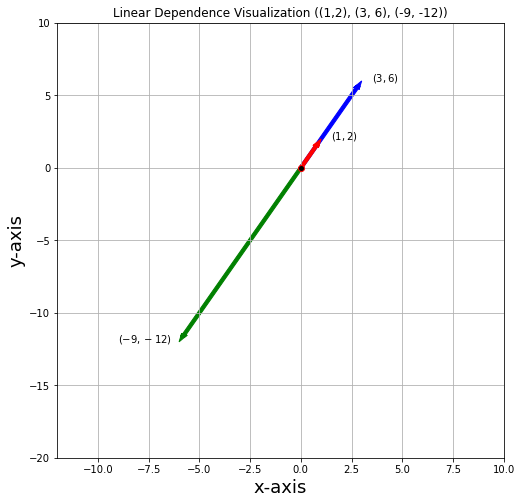

Linear Independence
- Linear Independence
- Algebraic Definition (Linear Dependence)
- Algebraic Definition (Linear Independence)
- Equivalent Algebraic Definition (Linear Independence)
- Theorem (Linear Combination Implies Linear Dependence)
- Theorem (The zero vector and linear independence)
- Theorem (Union of linearly independent vectors)
- Intuition (Linear (In)Dependence)
- Theorem (Uniqueness of Representation)
- Theorem (The Span of Linearly Dependent Vectors is Identical V2)
- Theorem (Inheritance of Linear Independence)
- Theorem (Length of Linear Independent Set \(\leq\) Length of Spanning Set)
- Corollary (Length of Linear Indepedent Set and Spanning Set)
- Geometric Definition (Linear Independence)
- How to determine if a set is Linearly Independent (Non-Matrix Algorithmic Way)
- Linkedin Summary
- Linear Independence References
Linear Independence
Algebraic Definition (Linear Dependence)
Definition
Let \(V\) be a vector space over a field \(\F\). The set of vectors \(\v_1, \v_2, ..., \v_m \in V\) is linearly dependent if and only if one of the vectors \(\v_i\), where \(i \in [1, m]\), is the zero vector or that at least one of \(\v_i\) is a linear combination of the rest of the vectors (i.e. \(\v_i = \sum_{j \neq i}\alpha_j\v_j\)).
More formally1, a sequence of vectors \(\mathbf{v}_1, \mathbf{v}_2, \dots, \mathbf{v}_m\) from a vector space \(V\) is said to be linearly dependent, if there exist scalars \(a_1, a_2, \dots, a_m\), not all zero, such that \(a_1\mathbf{v}_1 + a_2\mathbf{v}_2 + \cdots + a_m\mathbf{v}_m = \mathbf{0}\), where \(\mathbf{0}\) denotes the zero vector.
This implies that at least one of the scalars is nonzero, say \(a_1\neq 0\), and the above equation can be written as
Example (Linear Dependence in \(\mathbb R^2\))
Example
Consider column vectors
in the ambient \(\R^2\) space.
They are linearly dependent because the vector
and note that we are using \(\v_2\) as an example here, you can also say that \(\v_1\) is a linear combination of the other 2 vectors; but so long there is at least one such vector in the set, then this set is linearly dependent. Note I put a coefficient \(0\) in front of \(\v_3\) to indicate that the scalars are not all zero but can have some zeros.

Fig; Linear Dependent Vectors; By Hongnan G.
import matplotlib.pyplot as plt
import numpy as np
# Courtesy of https://github.com/MacroAnalyst/Linear_Algebra_With_Python
fig, ax = plt.subplots(figsize=(8, 8))
#######################Arrows#######################
arrows = np.array([[[0, 0, 1, 2]], [[0, 0, 3, 6]], [[0, 0, -6, -12]]])
colors = ["r", "b", "g"]
for i in range(arrows.shape[0]):
X, Y, U, V = zip(*arrows[i, :, :])
ax.arrow(
X[0],
Y[0],
U[0],
V[0],
color=colors[i],
width=0.18,
length_includes_head=True,
head_width=0.3, # default: 3*width
head_length=0.6,
overhang=0.4,
zorder=-i,
)
ax.scatter(0, 0, ec="red", fc="black", zorder=5)
ax.text(1.5, 2, "$(1, 2)$")
ax.text(3.5, 6, "$(3, 6)$")
ax.text(-9, -12, "$(-9, -12)$")
ax.grid(True)
ax.set_title("Linear Dependence Visualization ((1,2), (3, 6), (-9, -12))")
# axis([xmin, xmax, ymin, ymax])
ax.axis([-12, 10, -20, 10])
ax.set_xlabel("x-axis", size=18)
ax.set_ylabel("y-axis", size=18)
plt.savefig("linear_dependence.svg", format="svg", dpi=600)
plt.show()

Example (Linear Independence in \(\mathbb R^3\))
Courtesy of MacroAnalyst's Linear Algebra with Python.
Example
Next, we visualize linear independence in \(\mathbb{R}^3\) with vectors \((1,-2,1)^T\), \((2,1,2)^T\), \((-1,2,3)^T\).
Pan around the image (either by setting
ax.view_initor using JupyterLab widget), we can see that the green vector is not in the plane spanned by red and blue vector, thus they are linearly independent.
# %matplotlib notebook, use this only when you are in Jupyter Notebook, it doesn't work in Jupyterlab
import matplotlib.pyplot as plt
import numpy as np
# %matplotlib notebook, use this only when you are in Jupyter Notebook, it doesn't work in Jupyterlab
fig = plt.figure(figsize = (10,10))
ax = fig.add_subplot(projection='3d')
s = np.linspace(-1, 1, 10)
t = np.linspace(-1, 1, 10)
S, T = np.meshgrid(s, t)
X = S+2*T
Y = -2*S+T
Z = S+2*T
ax.plot_wireframe(X, Y, Z, linewidth = 1.5, color = 'k', alpha = .6)
vec = np.array([[[0, 0, 0, 1, -2, 1]],
[[0, 0, 0, 2, 1, 2]],
[[0, 0, 0, -1, 2, 3]]])
colors = ['r','b','g']
for i in range(vec.shape[0]):
X, Y, Z, U, V, W = zip(*vec[i,:,:])
ax.quiver(X, Y, Z, U, V, W, length=1, normalize=False, color = colors[i],
arrow_length_ratio = .08, pivot = 'tail',
linestyles = 'solid',linewidths = 3, alpha = .6)
ax.set_title('Linear Independence Visualization')
ax.set_xlabel('x-axis', size = 18)
ax.set_ylabel('y-axis', size = 18)
ax.set_zlabel('z-axis', size = 18)
ax.view_init(elev=60., azim=0)
plt.show()

Algebraic Definition (Linear Independence)
Definition
Let \(V\) be a vector space over a field \(\F\). The set of vectors \(\v_1, \v_2, ..., \v_m \in V\) is linearly independent if and only if the only solution to the equation \(a_1\mathbf{v}_1 + a_2\mathbf{v}_2 + \cdots + a_m\mathbf{v}_m = \mathbf{0}\) is the trivial solution, the zero vector \(\0\).
Equivalent Algebraic Definition (Linear Independence)
Equivalent Linear Independence Definition
Let \(V\) be a vector space over a field \(\F\). Let the set of vectors \(S = \v_1, \v_2, ..., \v_m \in V\);
Then \(S\) is linearly independent if and only if
i) the only solution to the equation \(a_1\mathbf{v}_1 + a_2\mathbf{v}_2 + \cdots + a_m\mathbf{v}_m = \mathbf{0}\) is the trivial solution, the zero vector \(\0\);
iif
ii) \(S\) is called a linearly dependent set and \(\mathbf{\v_1,\v_2,...,\v_m}\) are said to be linearly dependent iff \(a_1\mathbf{v}_1 + a_2\mathbf{v}_2 + \cdots + a_m\mathbf{v}_m = \mathbf{0}\) has non - trivial solutions. That is there exists real numbers \(a_1,a_2,...,a_m\) not all of them are zero, such that \(a_1\v_1+a_2\v_2+...+a_m\v_m=0\);
iif
iii) The set \(S\) is a linearly independent set if every non empty finite subset of \(S\) is linearly independent. The set \(S\) is a linearly dependent set if at least one non empty finite subset of \(S\) is linearly dependent.
Theorem (Linear Combination Implies Linear Dependence)
This is a very useful, and often better understood theorem!
Theorem
i) Let \(S = \{\mathbf{v_1,v_2,...,v_m}\}\) be a finite subset of a vector space \(V\) over a field \(\F\) where \(m \geq 2\), then \(S\) is linearly dependent if and only if at least one vector \(\mathbf{v_i} \in S\) can be written as a linear combination of other vectors in \(S\).
This means that there are scalars \(a_1,a_2,...a_{i-1},a_{i+1},...,a_m \in \F\) (scalars vanishing allowed) such that
ii) It follows that the contrapositive of this theorem: \(S\) is linearly independent if and only if no vector in \(S\) can be written as a linear combination of other vectors in \(S\).
Proof
Proof
We will just prove part i).
\(\implies\)
\(S = \{\mathbf{v_{1}, \cdots , v_{m}}\}\) is finite \(\implies\) \(|S| = n < \infty\) , \(S \subseteq V\).
If S is LD, then \(a_{1}\v_1 + a_{2}\v_2 + \cdots + a_{m}\mathbf{v_{m}} = 0\) has non trivial solutions. This means not all \(a_{i} = 0\). Suppose \(a_{k} \ne 0\), thus one can write in this way:
where \(b_{i} = \frac{-a_{1}}{a_{k}}\).
\(\Leftarrow\) If \(\exists \mathbf{v_m} = a_{1}\v_1 + \cdots + a_{m-1}\mathbf{v_{m-1}} + \cdots a_{m}\mathbf{v_{m}}\), Then \(a_{1}\v_1 + \cdots + a_{m-1}\mathbf{v_{m-1}} + \cdots a_{m}\mathbf{v_{m}} = 0\) will have non-trivial solution. Note \((-1)\mathbf{v_m} = a_{1}\v_1 - \cdots - a_{m-1}\mathbf{v_{m-1}} - \cdots - a_{m}\mathbf{v_{m}}\).
Then set \(a_{k} = -1\), we have
Hence, \((a_{1}, \cdots a_{m-1},-1, a_{k+1}, \cdots a_{m})\) is non trivial solution. Thus \(\v_1, \cdots \mathbf{v_{m}}\) is LD.
Theorem (The zero vector and linear independence)
Theorem (The zero vector and linear independence)
Note that \(\{\mathbf{0}\}\) is a linearly dependent set, which means that if \(\mathbf{0} \in S\), then \(S\) is a linearly dependent set.
Proof
Proof
Write \(c \cdot \mathbf{0} = 0\). Then one can easily see this equation has solutions other than \(c = 0\). Since by killing power of zero, we can have the variable \(c\) to be any number. Hence by definition, \(\{\mathbf{0}\}\) is a linearly dependent set.
If \(\mathbf{0} \in S\), then \(\mathbf{0}\) can be expressed as a linear combination of any other vectors in the set by setting coefficients to be \(0\). Hence it is considered a redundant vector and therefore causing \(S\) to be a linearly dependent set.
Theorem (Union of linearly independent vectors)
Theorem (Union of linearly independent vectors)
Let \(\mathbf{v_1, v_2,...,v_k}\) be LI vectors in \(\mathbb{R}^n\). If \(\mathbf{v_{k+1}}\) is a vector in \(\mathbb{R}^n\) and it is not a linearly combination of \(\mathbf{v_1,v_2,...,v_k}\), then \(\mathbf{v_1,...,v_k,v_{k+1}}\) are linearly independent.
Intuition (Linear (In)Dependence)
Consider a xy cartesian plane, we have the x axis, where we can visualize as walking left or right (east or west), and the y axis, walking forward and backwards (north or south). We claim that the set of vectors
is linearly independent, as neither vector can be represented by the other in any way. But if we add one more vector
then we say this set is linearly dependent because the vector \([1, 1]\) can be linearly combined by the other two, and is thus redundant.
But why the weird definition? Why does having a non-trivial solution to the equation means linear dependence? A good intuition from the post in mathstackexchange2:
Intuition
Your basic intuition is quite right --- a set of vectors are linearly independent if they don't affect each other (which, as it stands, is a somewhat ambiguous statement, hence the formal definition).
Perhaps it would be helpful to start with just two vectors, say the standard vectors $$ \begin{pmatrix} 1\ 0 \end{pmatrix} \hspace{20pt}\text{and}\hspace{20pt} \begin{pmatrix} 0\ 1 \end{pmatrix} $$ which are linearly independent in \(\mathbb{R}^{2}\) (two-dimensional coordinate space). Natural intuition would be to think that these two are linearly independent because there is no scalar that you can multiply one by to get the other. That is, for \(\alpha \in \mathbb{R}\), the equation $$ \alpha\begin{pmatrix} 1\ 0 \end{pmatrix} = \begin{pmatrix} 0\ 1 \end{pmatrix} $$ has no solutions. This is a good rule for any set of two vectors, and is in fact equivalent to the formal definition for if there were scalars \(\alpha_{1}, \alpha_{2} \in \mathbb{R}\) such that $$ \alpha_{1}\begin{pmatrix} 1\ 0 \end{pmatrix} + \alpha_{2}\begin{pmatrix} 0\ 1 \end{pmatrix} = 0 $$ (which is just the formal definition), then we could rearrange it to get $$ -\frac{\alpha_{1}}{\alpha_{2}}\begin{pmatrix} 1\ 0 \end{pmatrix} = \begin{pmatrix} 0\ 1 \end{pmatrix}. $$ This is clearly false!
The formal definition for an arbitrary number of vectors is an extension of this idea. We pick \(0\) to be the right hand side for convenience, since every vector space must have the zero vector (by definition), so that if some vectors affect each other in some way, they must be able to be combined some way to give you the zero vector. In fact, if a set of vectors are linearly independent, then the only vector that they agree on is the zero vector, and it can only be obtained by multiplying each vector by zero (and summing them up). Here I chime in a bit: consider \((0, 1), (1, 0), (1, 1)\) in \(\R^2\), then we know \((0, 1) + (1, 0) = (1, 1)\) where \((1, 1)\) is a linear combination of the former two vectors; and since \((0, 1) + (1, 0) = (1, 1)\), then \(((0, 1) + (1, 0)) - (1, 1) = (0, 0)\), the zero vector, this must be true for every vector that can be expressed as a linear combination of the rest.
If they can be combined in some way to give you the zero vector, then you can just rearrange them (like above) and find one of the vectors as a linear combination of the others, which would clearly imply that it is not independent of the others.
To make this more clear, let \(\{v_{1}, v_{2}, \ldots, v_{n}\}\) be a set of vectors, and suppose there exists non-zero scalars \(\alpha_{i} \in \mathbb{R}\) such that $$ \alpha_{1}v_{1} + \alpha_{2}v_{2} + \ldots + \alpha_{n}v_{n} = 0. $$ Then you can just rearrange this to get, for example, the equation $$ \frac{-\alpha_{1}}{\alpha_{n}}v_{1} + \frac{-\alpha_{2}}{\alpha_{n}}v_{2} + \ldots + \frac{-\alpha_{n-1}}{\alpha_{n}}v_{n-1} = v_{n}. $$ Then \(v_{n}\) depends on the other vectors, so the set is not linearly independent! Thus, the only way that you can get a set of linearly independent vectors to all give you the zero vector, is that all must be multiplied by zero, else you can rearrange the equation to show that one of the vectors depends on the others, which would be a contradiction. This is why the definition is the way it is.
As a note for your third point, the definition wants \(\alpha_{i} = 0\) for all \(i = 1, \ldots, n\). That is, every coefficient has to be zero, not just one of them.
Machine Learning
Though a bit too early, but we often represent the variable/feature space of the dataset using the Design Matrix and each column (or row) represents the encoded information of the variables. If there are many redundant vectors inside the Design Matrix, this means that we are having additional information that we do not need (which may hurt performance). PCA can also help to reduce the dimensionality too.
Theorem (Uniqueness of Representation)
Theorem (Uniqueness of Representation)
From the above, we can deduce something less apparent from linear independence, that is, for the same \(\v \in V\), and the same set of vectors \(\v_1, \v_2, ..., \v_m \in V\), there is only one unique representation of \(\v \in V\) using the set of vectors. For example, if we consider a simple example where \(\v = a_1 \v_1 + a_2 \v_2\) and \(\v = b_1 \v_1 + b_2 \v_2\), where \(a_1, a_2, b_1, b_2\) are assumed to be distinct scalars in \(\F\), then subtracting both results in
because we note that the equation can only have the trivial solution \(\0\). This results in a contradiction as we stated that \(a_i, b_i\) are distinct. So conclusion, if a set of vectors are linearly independent in \(V\), then any vectors in \(\v \in V\) can only have a unique representation in \(V\).
Using the example in Intuition (Linear (In)Dependence), we know that \(S\) is a linearly independent set, and imagine we take a vector \((1, 1)\), can we actually find another way to represent \((1, 1)\) using this exact set of vectors? In other words, using \((1, 0), (0, 1)\) as the "base vectors", we must move 1 unit to the right and 1 unit up to reach \((1, 1)\), can we move in any other way to get to \((1, 1)\)? The answer is no.
Theorem (The Span of Linearly Dependent Vectors is Identical V2)
Branching from the Theorem (Linear Dependence Span equals each other) in the Chapter Span and taken from Sheldon Axler: Linear Algebra Done Right, pp. 35:
Theorem (The Span of Linearly Dependent Vectors is Identical V2)
Let \(\v_1,...,\v_m\) be linearly dependent vectors in a vector space \(V\). Then there exists \(j \in \{1,2,\cdots,m\}\) such that the following holds:
- \(\v_j \in \textbf{span}(\v_1,\cdots,\v_{j-1})\);
- if the \(j\)-th term is removed from the linearly dependent set, then $\textbf{span}(\v_1, \cdots, \v_{j-1}, \v_{j+1}, \cdots \v_m) = \textbf{span}(\v_1, \cdots, \v_{j-1},\v_j, \v_{j+1}, \cdots \v_m) $.
Theorem (Inheritance of Linear Independence)
Theorem (Inheritance of Linear Independence)
Let \(S_1 \subseteq S_2\), if the smaller set \(S_1\) is linearly dependent then so is the larger set \(S_2\). \(S_2\) is linearly dependent follows from part iii) of Equivalent Definition of Linear independence. Now the contrapositive of this is if the larger set \(S_2\) is linearly independent then so is \(S_1\) being linearly independent.
Theorem (Length of Linear Independent Set \(\leq\) Length of Spanning Set)
Theorem
Taken from Sheldon Axler: Linear Algebra Done Right, pp. 35: In a finite-dimensional vector space, the length of every linearly independent set of vectors is less than or equal to the length of every spanning set of vectors.
Example (Usage of Theorem)
Example 1: Usage of Theorem to show a set of vectors cannot be linear independent
Show that the set of vectors \(\{(1,2,3), (4,5,8), (9,6,7), (-3,2,8)\}\) is not linearly independent in \(\R^3\).
Solution: We know that the set of vectors (basis) \(\{(1,0,0), (0,1,0), (0,0,1)\}\) spans \(\R^3\). And hence, if the set of vectors in question is linearly indepedent, then its cardinality cannot exceed 3.
Example 2: Usage of Theorem to show a set of vectors cannot span the vector space
Show that the set of vectors \(\{(1,2,3,5), (4, 5, 8, 3), (9, 6, 7, 1)\}\) does not span \(\R^4\).
Solution: We know that the set of vectors (basis) \(\{(1,0,0,0), (0,1,0,0), (0,0,1,0), (0,0,0,1)\}\) is linearly independent in \(\R^4\). From theorem, we know the length (cardinality) of the set of linearly independent vectors is 4, and in the question, the set of vectors has only cardinality 3, and hence, it cannot span \(\R^4\).
Corollary (Length of Linear Indepedent Set and Spanning Set)
Corollary
As a corollary of the Theorem (Inheritance of Linear Independence) above:
Let \(S = \{\mathbf{u_1,u_2, \cdots, u_k}\} \subseteq \mathbb{R}^{n}\). If \(k >n\), then \(S\) is linearly dependent.
Proof
Proof
Let \(\mathbf{u_i} = (a_{{i1}},a_{{i2}},...,a_{{in}})\) for \(i=1,2,...,k\). Then we write
and check if it has the trivial solution only or has non trivial solutions.
\(\begin{cases} a_{11}c_1+a_{21}c_2+...+a_{k1}c_k = 0\\ a_{12}c_1+a_{22}c_2+...+a_{k2}c_k = 0\\ ~~~~~~~~~~~\vdots\\ a_{1n}c_1+a_{2n}c_2+...+a_{kn}c_k = 0 \end{cases}\)
This system has \(k\) unknowns and \(n\) equations. By our previous results, since \(k > n\), the system must have non trivial solution.
Hence \(S\) is linearly dependent.
Example
Example
- In \(\mathbb{R}^{2}\), a set of three or more vectors must be linearly dependent;
- In \(\mathbb{R}^{3}\), a set of four or more vectors must be linearly dependent.

Fig; Note that the first figure shows a set of dependent vectors; the second figure shows a set of independent vectors; and the third figure shows a set of dependent vectors; By Hongnan G.
The above image illustrates that in \(\R^2\) space, if a set of vectors has cardinality more than the dimension of its ambient space (read: 2), then it must be linearly dependent.
Intuition
In the example above, our ambient space is \(\R^2\), the author Mike provided a good intuition here on why a set of vectors whose cardinality is more than its ambient space cannot be linearly independent. Assume a contradiction, that they are linearly independent, then these 3 vectors span a 3d-subspace, which cannot happen if all 3 vectors are in 2d-subspace. To visualize it, imagine drawing 3 vectors on a 2d-plane (a piece of paper), then can you ever construct a cube (3d-space) from these 3 vectors? No.
Geometric Definition (Linear Independence)
We go through the Geometric Definition after the previous theorem.
From Mike X Cohen: Linear Algebra: Theory, Intuition, Code, 2021. (pp. 90), a set of vectors independent if the subspace dimensions spanned by the set of vectors is equal to the number of vectors in the set. Recall that up till now, the subspace dimension simply means the "number of axes" in the subspace. This can be understood with the following example:
For example, a set with one vector spans a line (assuming it is not the zeros vector) and is always an independent set (1 vector, 1 dimension); a linearly independent set of two vectors spans a plane (2 vectors, 2 dimensions); an independent set with three vectors spans a 3D space (3 vectors, 3 dimensions).
For more info, read Mike X Cohen: Linear Algebra: Theory, Intuition, Code, 2021. (pp. 90-92).
How to determine if a set is Linearly Independent (Non-Matrix Algorithmic Way)
pp. 95-96 Mike's book.
Linkedin Summary
Today marks day 9 of round 1, continuing my journey in #linearalgebra, following the book "Linear Algebra, Theory, Intuition and Code", I went through the definition and some examples of what constitutes a linear in(dependent) set.
In short, for a vector space V over a field F^n, a subset S = {v_1, v_2, ..., v_m} of V is a linearly independent set if a_1v_1 + a_2v_2 + ... + a_m_vm = 0 has only the trivial solution. This definition might seem a bit weird at first sight, we can break down and see what it really means.
We can understand this definition better from its contraposition: if subset S of V is linearly dependent, then it must have at least one non-trivial solution; consider this solution to be (a_1, a_2, ..., a_m) = (1, 2, 0, ..., 0), this implies that v_1 = -2v_2. Though not a proof, we now know that if at least one vector can be represented by a linear combination of the other vectors in the set, then this set is linearly dependent. So another way to word the linear independence definition is that no vector in S can be represented as a linear combination of the other vectors in S.
An immediate consequence of this definition is that an linearly independent set must have an unique representation in the vector space spanned by this set. Suppose not (a contradiction), then there exists a_i, b_i's such that a_1v_1 + ... a_mv_m = 0 and b_1v_1 + ... + b_mv_m = 0, where a_i and b_i's are not all the same. This implies (a_1-b_1)v_1 + ... + (a_m-b_m)v_m = 0 has a non-trivial solution since there exists at least one pair of a_i != b_i.
Geometrically, one can see the below image, 3 vectors in a 2d-plane is necessarily linearly dependent, you can also verify that to get (10, 10) can be made up by (0, 10) + (10, 0), or 1*(10, 10), which has two representations.
Linear Independence References
- https://www.machinelearningmindset.com/linear-independence-of-vectors/
- https://math.stackexchange.com/questions/2779918/intuition-for-formal-definition-of-linear-independence
- https://medium.com/swlh/how-to-understand-linear-independence-linear-algebra-8bab1d918509
-
https://math.stackexchange.com/questions/2779918/intuition-for-formal-definition-of-linear-independence ↩